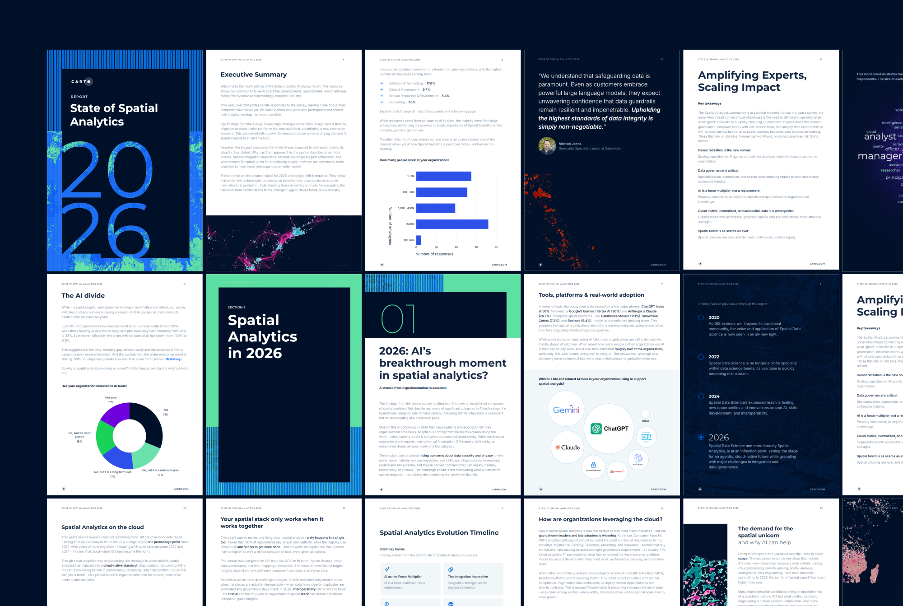
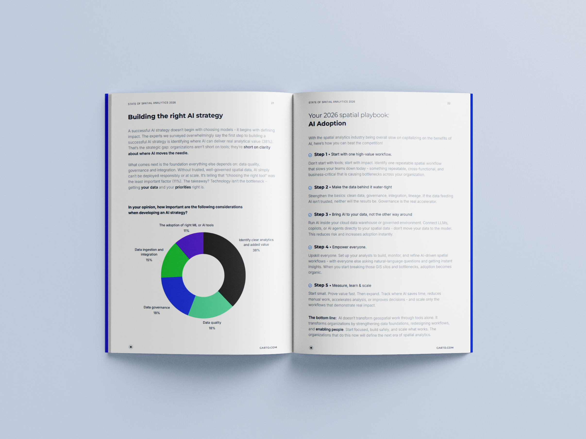
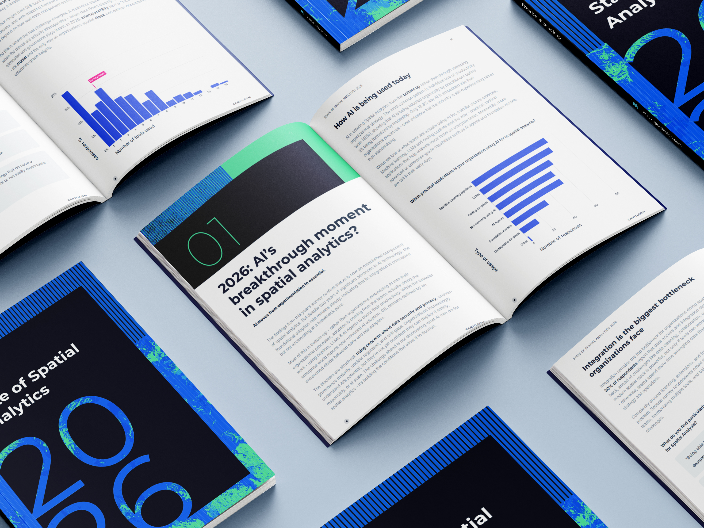
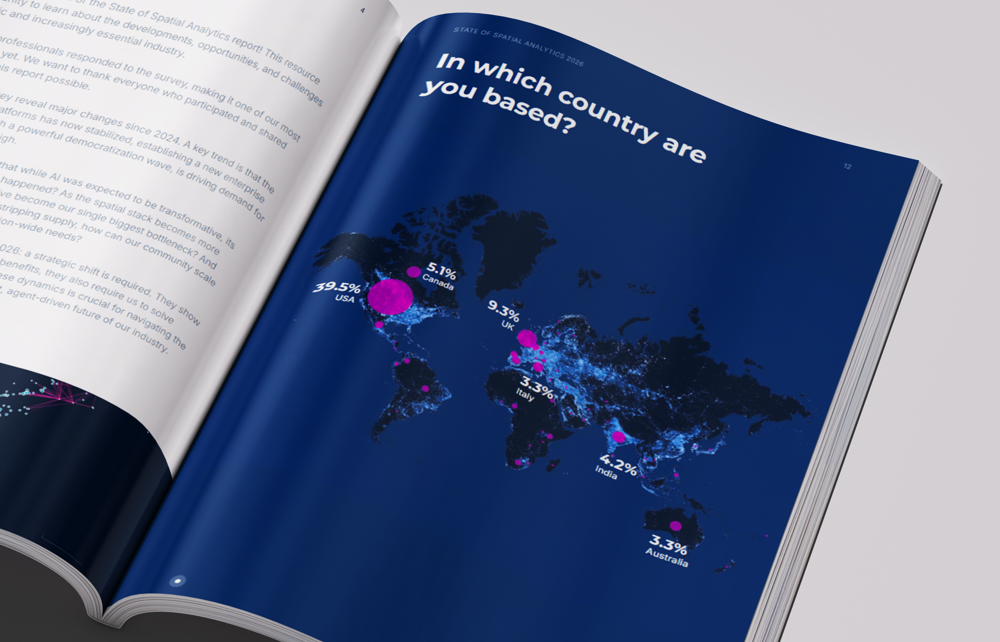

State of Spatial Analytics 2026
A first look at an annual industry report exploring the evolving spatial analytics landscape, pairing editorial structure with clear data storytelling across survey findings and geographic context.



